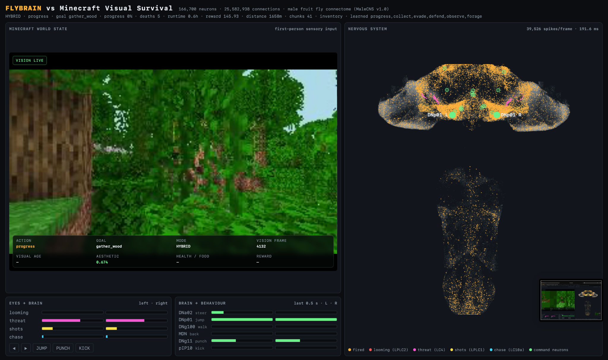

The experiment started with a question that was equal parts neuroscience, reinforcement learning, and terrible judgment: what happens if I put a simulated fruit-fly brain inside Minecraft and just let it live there?
I had already been playing with fly.ai, which can run the MaleCNS connectome as a fixed neural system. On my server, the simulation comes up as 166,700 neurons and 25,582,938 connections on CUDA. Those are the loaded model’s counts, not 25 million individually simulated synapses. MaleCNS maps the male fly’s central nervous system; fly.ai uses simplified spiking units and connectome-derived weights rather than a complete biological emulation. That was interesting on its own, but staring at firing neurons in a dashboard eventually creates the same problem every homelab project creates: sooner or later I need to connect it to something objectively unnecessary.
Minecraft was perfect. It already had a world, physics, navigation, resources, day/night cycles, hunger, hostile mobs, crafting, death, exploration, and enough long-term progression to make “get good” measurable. More importantly, I could join the same server from my gaming PC and watch this simulated nervous system make questionable life choices in real time.
Stage 1: give the fly a body
The first version was intentionally simple. I spun up a Paper 1.21.11 server locally, connected a Mineflayer client named FlyBrain, and used Mineflayer as the motor layer. The experiment did not need the connectome to learn how TCP works, how Minecraft's protocol works, or how to translate “go left” into exactly the right packet sequence. It only needed to produce behaviour.
Minecraft state
↓
sensory encoding
↓
MaleCNS connectome
↓
descending-neuron activity
↓
learned readout
↓
Mineflayer motor layer
↓
MinecraftThe first lesson was basically kindergarten: follow me. I supplied the relative position of my player, stimulated the fly's sensory channels, and recorded the resulting descending-neuron activity. A teacher generated simple movement labels while a readout learned the mapping.
Once that worked, I had a fly-brain-controlled player following me around Minecraft. This was the point where the project stopped being a neural visualization and became a very weird agent.
Stage 2: stop making me babysit it
Following me was cute, but it meant the fly was basically a biological Bluetooth accessory. I wanted it to keep doing things when nobody else was online.
The first big design decision was to split behaviour selection from motor execution. The teacher or downstream policy would select “explore,” “collect,” “evade,” or “progress,” with the learned policy using activity from MaleCNS. Mineflayer's pathfinder would figure out how legs, jumping, terrain, and obstacles translate that into Minecraft movement.
This immediately fixed one of the funniest early failure modes: the connectome would confidently output explore hundreds of times while the character stood perfectly still, holding an item and looking at the sky. The brain was making a decision. The body was just terrible at having a body.
Follow a player and map sensory state to simple movement.
Explore autonomously even when no human player is connected.
Collect dropped items, seek trees, eat when hungry, and evade threats.
Turn progression into a persistent goal instead of a single action.
Stage 3: survival, progression, memory, and actual consequences
At this point I stopped treating Minecraft as a demo and started treating it as an environment. I reset the server to Survival on Normal difficulty, enabled limited crafting, and gave the agent a progression target: eventually produce a diamond pickaxe and diamond armour from a fresh world.
The progression path looked roughly like this:
wood
↓
planks + sticks
↓
crafting table
↓
wooden pickaxe
↓
stone
↓
stone pickaxe
↓
furnace
↓
iron
↓
iron pickaxe
↓
diamonds
↓
diamond pickaxe
↓
diamond armourThat required persistent memory. The fly now keeps track of deaths, lifetime, travelled distance, unique chunks, progression milestones, buildings, and cumulative reward. The readout and policy are periodically checkpointed, and telemetry is written to SQLite and CSV so an overnight run produces something better than “I think it looked smarter.”
Experiment instrumentation // overnight-safe
What the system records
- Neural system
- 166,700 neurons
- Connections
- 25,582,938
- Learning phases
- Teacher → Hybrid → RL
- Telemetry
- SQLite + CSV
- Recovery
- systemd watchdogs
- Storage
- retention + free-space guard
The connectome remains fixed. What learns is the downstream readout and reward-driven policy over the neural state.
The training data is also capped and rebalanced. Otherwise an autonomous agent that spends most of its time walking would create an ocean of explore samples and drown out rarer but much more important experiences like eating or escaping danger.
I added a reward model so the experiment could eventually move beyond imitation. The intent was straightforward: reinforce useful progress and make damage and death expensive. The implementation was less straightforward. As the overnight run would demonstrate, a rising reward counter can also mean I have successfully taught an insect to exploit my accounting.
Teaching it about animals without giving it a cow dictionary
This was one of the parts I cared about most. I did not want to hard-code cow = food, pig = food, chicken = food. That would work, but the interesting part disappears immediately.
The intended approach is for passive creatures to become visual experience clusters. When the fly is well fed, it can observe unfamiliar creatures. When hunger becomes severe, foraging becomes available. The intended next step is to associate interaction outcomes with similar visual experiences later. In the current candidate, creature values remain neutral because food provenance is not yet tracked; assigning a whole transition’s reward to whatever creature happened to be visible would repeat the attribution mistake.
proposed creature-value loop (not validated)
unknown visual creature pattern
↓
observe / interact
↓
outcome
↓
reward
↓
value attached to that visual clusterThe same idea extends to cooking. Raw edible inventory objects can be tested in a furnace, and successful cooking can be recorded. The current candidate’s explicit hunger-sensitive reward comes from useful food acquisition and verified eating; I have not demonstrated that it independently learned a nutritional ranking. It is still using Minecraft's mechanics as the environment, but it is not being handed a prose guide to steak.
Stage 4: give it eyes
The biggest upgrade was adding first-person vision to the neural input. Minecraft state still supports the teacher, reward calculation, and motor routines; this is a hybrid agent, not an end-to-end pixels-only player. Hunger and other structured signals are also encoded into neural stimulation.
Earlier versions received convenient structured information: target angle, target distance, hostile nearby, item nearby. That was useful for proving the control loop, but it was also a huge shortcut. The agent did not need to see Minecraft; I was basically whispering object labels into its nervous system.
Stage 4 uses a headless Prismarine Viewer renderer to generate a 256×144 first-person frame. The image is processed into luminance, edges, motion, spatial salience, symmetry, balance, and a compact visual descriptor. Those features are converted into visual blobs and fed through the fly's eye model before MaleCNS advances.
first-person JPEG
↓
luminance + edges + motion
↓
spatial salience sectors
↓
fly Eyes()
↓
visual neurons
↓
MaleCNS
↓
descending-neuron trace
↓
behaviour policyThe live camera pipeline does not archive raw frames to disk. The most recent JPEG is held in memory for processing and for the dashboard's live visual feed. This matters because “teach the fly to see” should not accidentally become “fill a 512 GB SSD with Minecraft screenshots by breakfast.”
I also gave the fly hobbies
Pure survival was starting to feel too utilitarian, so I added something less defensible: architecture.
The first version paid a tiny aesthetic reward for attractive scenes. Symmetry, balance, novelty, the usual things you might put in a property listing. The problem is that looking at a nice building and building a nice building are very different accomplishments.
The revised candidate removes the free reward for looking. It tracks blocks the bot actually places, checks that a shelter has a roof and a valid structure, and rewards verified completion. A completed shelter earns 12 points, with a small 2-point symmetry bonus and a separate one-time reward for using shelter at night. An existing block does not count as something the fly built.
I also added collecting and storing resources, with bounded rewards for increasing useful stock and depositing surplus. Taking something out of a chest and putting it back cannot keep earning the same stock bonus. Building has its own payoff so the intended destination is an actual structure, rather than nineteen chests full of architectural ambition.
Why this is interesting // beyond the meme
What the experiment is actually testing
Embodied connectomes
A simulation based on a fixed biological connectome can act as a reservoir inside a larger embodied agent stack. The useful question is not whether it becomes “a human brain,” but whether its dynamics provide separable state that downstream learning can exploit.
Perception bottlenecks
Replacing symbolic labels with rendered pixels makes the task dramatically less convenient. It lets me test whether visual structure contributes useful neural state, while keeping the structured assistance elsewhere in the system explicit.
Hybrid agent design
The project ended up looking less like one giant model and more like a nervous system: visual processing, a central connectome, descending activity, learned policy, motor primitives, memory, and environmental feedback.
Measurable weirdness
The SQLite telemetry means every funny story can be checked later: how long it survived, what it learned, what killed it, how often it built, whether reward improved, and where progression stalled.
The dashboard became part of the experiment
I modified the original fly.ai dashboard so the live connectome and the fly's actual first-person Minecraft vision can sit beside each other. That turned out to be one of the best debugging tools in the project.
I can now watch a rendered scene, see the visual frame counter advance, inspect the current aesthetic score, watch neurons fire, and see the chosen behaviour at the same time. If the agent suddenly spends ten minutes running from nothing, the dashboard makes it much easier to tell whether the problem is perception, learned policy, or Minecraft's motor layer deciding a flower is an insurmountable geological event.

What I deliberately did not claim
It is tempting to anthropomorphize the whole thing because that is half the fun, but the boundaries matter.
This experiment does not establish human-like understanding of Minecraft. Mineflayer still handles low-level locomotion and block interaction. Minecraft's registries still expose mechanics to the body layer. The connectome is not being biologically rewired. Its neural dynamics are being used as a reservoir, while learned readouts and an RL policy operate downstream.
That distinction is exactly why I like the experiment. It lets me keep asking a narrow question: does routing embodied perception through this fixed connectome produce useful state for behaviour learning?
And because the world can now run unattended—with automatic respawn, watchdogs, checkpoints, telemetry, capped replay buffers, and storage protection—I can investigate that with measurements instead of vibes. Establishing an advantage from the connectome would still require comparisons with simpler or randomized reservoirs.
The overnight run found a loophole
The infrastructure had a very good night. The policy had a very specific interpretation of success.
Across 11,866 behaviour samples, evade accounted for 7,618, or about 64.2%. It earned an average reward of +0.0669, while explore averaged −0.1633 and progress −0.1422. Meanwhile, the bot had reached zero food, roughly 0.71 HP, 73 deaths, and zero buildings. Total reward was still above 4,250.
I had built a system where running away from the task was more profitable than doing the task. The fly had read the compensation plan.
Those counts are observation samples, not a precise breakdown of time spent on each action. But the direction was clear enough: the reward function was paying for the wrong thing. Successfully scheduling an escape was being treated as an accomplishment, even when there was no useful outcome.
Pay for outcomes
I backed up the working setup and moved the changes into a separate candidate, with a disposable Minecraft 1.21.11 world on another port. The reward changes were deliberately concrete:
- Survival has teeth. Death now costs 60 points, damage is penalized, and starvation accumulates a cost over elapsed time. Respawning cannot masquerade as successfully eating.
- Running away is not a salary. Moving or scheduling
evadeearns no action bonus. Positive escape reward requires an observed nearby threat and a safe outcome, rather than distance travelled alone. That is still a proxy for avoiding damage, not proof of what would have happened without the escape. - Progression pays for milestones. Wood, planks, a crafting table, tools, and stone receive meaningful one-time rewards, with milestone memory surviving restarts.
- Food matters when it is needed. Useful food acquisition and verified eating are rewarded in context, with stronger pressure when hunger is low.
- Busy is not productive. Prolonged lack of progress incurs a time-based penalty, including when the bot alternates between actions instead of repeating one label. The current implementation exempts shelter and follow actions.
- Resources need a purpose. Useful collection, storage, completed construction, and shelter use have separate checks. Recycling the same inventory or repeatedly counting the same building cannot manufacture progress.
The learning code also stops bootstrapping future value across death, uses elapsed time in discounting, and allows larger negative learning updates so a serious failure is not flattened into a tiny correction. The candidate starts with separate learning state rather than inheriting the policy that discovered the evade loophole.
The fly did not discover 1,266 species
The same overnight run produced 1,266 creature clusters, with reference similarity still at zero. The descriptor was effectively clustering the scene around a creature: terrain, camera angle, lighting, and possibly the renderer’s question-mark blocks. I had accidentally built a biodiversity survey of camera movement.
The candidate computes the descriptor from a centred crop aimed at the observed object, caps the cluster count at 128, and starts with fresh creature memory. A regression test checks that changing pixels outside the crop does not change the descriptor. Automatic creature observation is gated behind the experimental crop flag, and the observation cooldown starts when the attempt begins, so a failed approach cannot keep selecting observation forever.
The crop path stays disabled in the current live tests while rendering and targeting remain unvalidated. That narrows the descriptor’s scope; it is not object segmentation, and background inside the crop can still affect it. Reliable creature recognition has not yet been demonstrated.
What actually improved
The first short candidate run earned milestones through a stone pickaxe, then spent most of its samples observing and eventually drowned. A second run recorded zero deaths and no sampled starvation over roughly five minutes, but 976 of its 977 observations said progress. It was stuck trying to smelt iron. A different action label can still hide the same lack of progress.
I added a water safety override that cancels the current activity and tries to surface when air is low, plus a higher pathfinding cost for water. It is a scripted safeguard, not learned swimming. The second run recorded zero interventions, so its zero-death result does not establish that the guard saved it.
The smelting stall exposed a body problem: the bot had raw iron, planks for fuel, and a furnace in its inventory. Furnace placement failures were being swallowed. The station patch searches more valid positions, approaches stations, verifies actual placement, and logs failed attempts. The next live run placed a furnace, then moved through craft_iron_pickaxe to gather_diamond.
By that point, all 26 Node regression tests and the earlier five Python tests had passed. The checks cover reward loopholes, terminal learning behaviour, crop isolation, shelter validation, station handling, and the water override. They are useful engineering checks. They are not a Minecraft competence score.
TEACHER mode. The short benchmarks do not establish improved autonomous RL behaviour, reliable building, or sustained survival. A scripted teacher will not change its choices merely because I made those choices more expensive.Enough debugging for one post
The rest was ordinary homelab plumbing: observation flow control, file ownership, process supervision, and getting headless WebGL to behave. The dashboard and camera now work directly on my LAN. The last camera issue was particularly dignified: the dashboard expected port 8090, the candidate HTTP feed defaulted to 8190, and 8189 was an entirely different internal receiver. Neurons were firing. Ports were not agreeing.
Rendering remains the unfinished part. The test server and protocol data use Minecraft 1.21.11, but the installed visual assets resolve to 1.21.8. Question-mark blocks and missing entity-model errors remain. I have not upgraded everything to the newest Minecraft release or downgraded the original world. The live camera works; that does not make every pixel correct.
I am cutting the survival-patching diary off here. The useful next result is a controlled comparison of the learned policy against the teacher and a simple baseline, using progression, deaths, hunger, repetition, and completed structures. More reward points on their own have already failed that test.
I started by putting a fruit-fly connectome in Minecraft. I ended up auditing the incentive structure of an insect. This feels like a reasonable use of a GPU.
Current test setup
The original setup remains separate. This is the candidate used for the short tests and the current interactive run; it is an experimental build, not a finished autonomous player.
Candidate files
~/flybrain-v4-candidate/ minecraft_survival_brain_v4.py fly_survival_v4.js reward_v4.js water_guard_v4.js summarize_run.py tests/
Ports
25566 Test Minecraft (loopback) 8866 Brain WebSocket (loopback) 8877 Dashboard (LAN) 8189 Internal camera TCP (loopback) 8090 Camera HTTP / MJPEG (LAN) FLY_VISION_HTTP_PORT=8090
Experiment state
FLY_EXPERIMENT_DIR: ~/flybrain-v4-candidate/test-data/brain Body state: ~/flybrain-v4-candidate/test-data/ fly_state-run3.json Transition log: fly_state-run3.json.transitions.jsonl
Run boundaries
Candidate runs use tmux with a 30-minute body timeout for the interactive test. JSONL transitions complement the brain telemetry. The latest run resumes prior state, and human interaction can affect its results; it is not a fresh independent benchmark.
The candidate uses FLY_ALLOW_UNVALIDATED_RENDERER=1 for the known renderer mismatch and keeps FLY_ENABLE_EXPERIMENTAL_CROPS=0.
Reproducibility status: the upstream tools are linked below. A complete packaged release of my modified experiment is not included with this post.
Sources & tools
The upstream links below document the tools and model. Run counts, rewards, and test outcomes above come from my local logs and candidate code; they are experiment observations, not independently replicated findings.
- MaleCNS — the underlying male central nervous system connectome and dataset documentation. Janelia ↗
- fly.ai — connectome simulation and MaleCNS tooling. GitHub ↗
- Mineflayer — Minecraft bot/client framework used as the body and interaction layer. GitHub ↗
- mineflayer-pathfinder — low-level navigation and movement goals. GitHub ↗
- Prismarine Viewer — headless first-person renderer used for Stage 4 visual input. The experiment patches the 1.21.11 viewer slot because the installed release otherwise falls back to older 1.21.x render assets. GitHub ↗
- Paper — Minecraft Java server used for the experiment world. PaperMC ↗